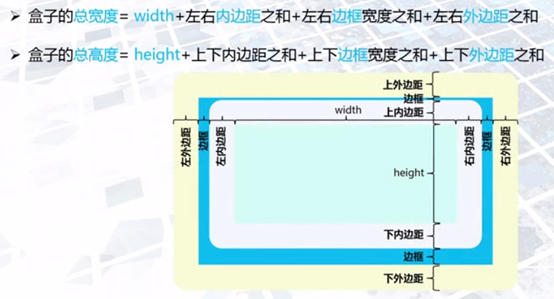

普通流或流布局是块级或行内元素在文档中的默认布局方式，行内（一个队列中的）元素在一行内从左到右显示，块级元素自成一行从上到下显示。
浏览器从上到下一行一行（即一个一个块级元素）的加载和显示，每一行里又是从左到右加载一个一个行内元素。
如：一个请求返回的数据其实就是Html元素，这些元素如果不加以控制，默认为一股流，顺序地向浏览器中填充（流过）
span , a , img , input , textarea , select , button , br , lable , strong , em , i ,sup,audio,video,canvas等
大家回想一下，在html源代码中，明明是分行编写的元素，但在浏览器显示时并不是分行的，而是连续的。
无论如何，div是一种块元素，每个元素铁定会占一行，无论当前行是否已经用完了，也就是所谓的“流”的概念。
如果一个div块被设为浮动的话，它将脱离这个流，自主地去填充这个区域，去靠到最左边或者最右边。
如果将连续的两个块设为浮动的话，他们都将和流中的上一个元素的下边沿对齐，并且靠后的那个浮动元素（假设两个浮动元素都是向左浮动的）会靠在前面那个元素的左边。如果空间不够，则会被挤向下一行。
上面话说起来简单，但对初学者还是麻烦，现总结一下再实例说明一下。
display:block（none为不显示）, 即一个div 不管多小都是占一行的。div没有设置宽度的话默认是占领整块的。float:left的子div（没有设置width)是看不到两个子div的效果的。。。。。（除非两个子div各自明确设置一个width值）clear : none | left | right | both
参数：
none : 默认值。允许两边都可以有浮动对象
left : 不允许左边有浮动对象
right : 不允许右边有浮动对象
both : 不允许有浮动对象可能会尝试这样写：在div1的CSS样式中添加clear:right;，理解为不允许div1的右边有浮动元素，由于div2是浮动元素，因此会自动下移一行来满足规则。 其实这种理解是不正确的，这样做没有任何效果。是因为：
对于CSS的清除浮动(clear)，一定要牢记：这个规则只能影响使用清除的元素本身，不能影响其他元素。
margin是外边距 比如两个div之间的距离，如margin:1px 则上下左右边距都为1px,它默认从上边开始顺时针一次给div加边距，还有一种简便写法就是
margin:1px 2px 3 px 4px(上，右，下，左）一次设置。
又或者麻烦点的 margin-left:1px;margin-top:2px;margin-right:3px;margin-bottom:4px;
还有另一种写法是:
margin:1px 2px;这里设置了上、右的边距。则下，左默认跟上、右的一样宽，又如margin:1px,2px,3px; 那么左边距则默认跟右边距一样为2px,其它也是 以此类推.
所以，我们不难理解：
<div style="margin:0 auto; padding:0;width:600px;">
意思就是本DIV在窗口中的上下边距为0，左右边距自动，即左右居中对齐.
注意： text-align:center是指该容器内的内容对齐。能区分开以上两个意思吗？一个是针对本容器在窗口中位置，一个是容器内部的内容对齐方式。
通过position定位方法和边偏移量（top/left/right /bottom）可实现网页元素的精确定位。偏移量可为数值或百分比.
| 属性 | 简介 |
|---|---|
| position | 设置元素的定位方式 |
| z-index | 设置元素的层叠顺序，对static元素无效 |
| top | 顶部偏移量，设置元素相对于其最近一个已定位父元素顶部边缘的位置 |
| left | 左侧偏移量，设置对象相对于其最近一个已定位父元素左边相关的位置 |
| right | 右侧偏移量，设置对象相对于其最近一个已定位父元素右边相关的位置 |
| bottom | 底部偏移量，设置对象相对于其最近一个已定位父元素底边相关的位置 |
语法：position：static | relative | absolute | fixed
取值：
static：默认值，遵循文档流布局。边偏移量属性不会被应用。relative：元素遵循文档流，但会相对于其在文档流中的原位置偏移。absolute：绝对定位。元素脱离文档流，将依据参考原点和边偏移量进行定位。fixed：固定定位。元素脱离文档流，将依据边偏移量以浏览器窗口左上角为参考原点进行偏移；当出现滚动条时，对象不会随着滚动。list-style 列表样式
语法：
list-style: list-style-type|list-style-image|list-style-position
子属性：
list-style-type：设置列表项所使用的预设标记
list-style-image：设置列表项标记的图像
list-style-position：设置列表项标记在列表项之外或之内显示
语法：
list-style：[ list-style-image ] || [ list-style-position ] || [ list-style-type ]
默认值：看独立属性自身
取值：
[ list-style-image ]：设置或检索作为对象的列表项标记的图像
[ list-style-position ]：设置或检索作为对象的列表项标记如何根据文本排列
[ list-style-type ]：设置或检索对象的列表项所使用的预设标记
为使盒子自适应边框大小，根据内容自动调整边框大小： box-sizing: border-box;
盒子内 弹性布局：display: flex;
列向上布局：column-count: 3; 表示划分为三列